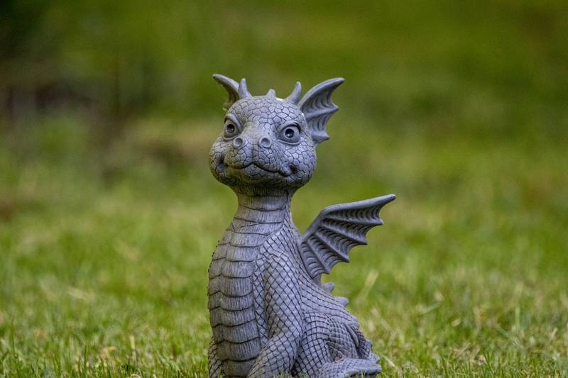

Introdução

Civilizações ao longo do tempo mesmo sem contato entre si descreviam criaturas místicas que hoje chamamos de Dragões, como isso ocorreu mesmo sem dragões terem existido? É oque tentaremos explicar. E de extra vamos fazer comparações entre os mitológicos dragões e os gigantescos (ou não). A palavra dragão vem de draconem, do Latim mais ou menos no XIII, que significava “serpente grande”.